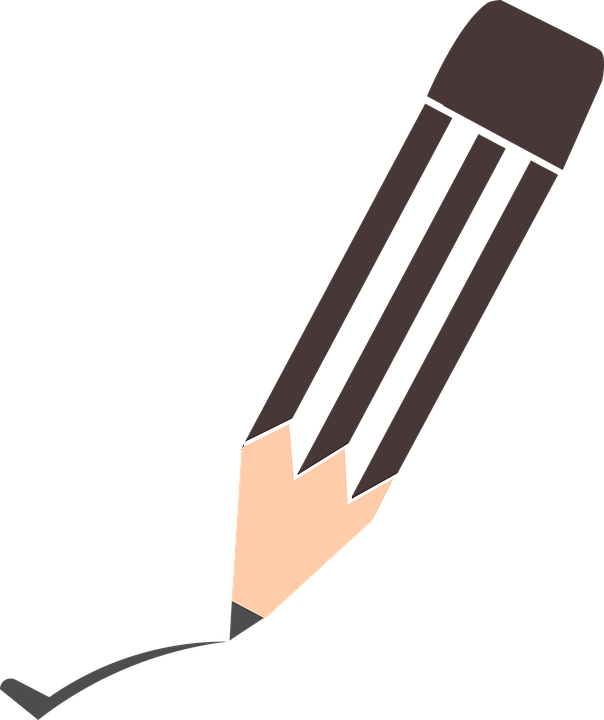

CS 738: Advanced Compiler Optimizations (2019-20 Ist Semester)
Instructor :  Amey Karkare (karkare at cse dot iitk dot ac dot in , karkare at gmail dot com )Timings : Mon, Thu 02:00 -- 03:15 PMVenue : KD 101, Dept of CSE
This course aims to teach topics in program analysis and compiler optimizations.
Code of Ethics
Any report/program/assignment you submit must clearly distinguish your contribution from others (webpages, softwares, report, discussions with other students). The penalty for copying in any form will be severe .
Announcements
Important : All emails' subject line should begin with "[CS738] ". Email not complying to this rule will NOT be entertained .
We shall use LLVM for Assignments and Project. Download and install it. Also, go through Web-page/Tutorials to familiarize yourself with LLVM.
If you are registered for the course, subscribe to CS738 on Canvas
Topics Covered and Slides
The slides are not suitable for taking prints as there is a lot of redundancy due to overlays. Use handouts if you really need a print.
Introduction [handouts ] [slides ]
Overview of Optimizations [handouts ] [slides ]
Data Flow Analysis [handouts ] [slides ]
Data Flow Analysis (contd ...) [handouts ] [slides ]
Data Flow Analysis Foundations [handouts ] [slides ]
DFA Foundations (contd ...) [handouts ] [slides ]
Flow Graph Theory [handouts ] [slides ]
Constant Propagation [handouts ] [slides ]
SSA [handouts ] [slides ] [paper ]
SSA (contd ...) [handouts ] [slides ]
Conditional Constant Propagation [handouts ] [slides ] [paper ]
SSA PRE [handouts ] [slides ] [paper ]
SSA PRE Example[handouts ] [slides ]
Interprocedural analysis [handouts ] [slides ]
... (Functional Approach) [handouts ] [slides ]
... (Call-strings Approach) [handouts ] [slides ] By Prof Uday
Pointer Analysis [handouts ] [slides ] [Anderson's ][Steensgaard's ] [Yanniss's Tutorial ]
Types and Program Analysis [handouts ] [slides ]
Untyped Lambda Calculus [handouts ] [slides ]
Typed Arithmetic Expressions [handouts ] [slides ]
Simply Typed Lambda Calculus [handouts ] [slides ]
Type-based Points-to Analysis [handouts ] [slides ] [Steensgaard's ] [Manuvir's ]
Symbolic Execution [Slides by Prof Johannes Kinder ]
Assignments
There will be short assignments to give you a chance to apply the lecture material. Assignments will have some written and some programming tasks.
Assignment 4 on Canvas. Due date October 18, 2019 until 11:50 PM IST.
Assignment 3 on Canvas. Due date September 09, 2019 until 11:50 PM IST.
Assignment 2 on Canvas. Due date August 23, 2019 until 11:50 PM IST.
Assignment 1 on Canvas. Due date August 05, 2019 until 11:50 PM IST.
Course Project
Project Description will come Here
Course Outline
The course will mainly cover topics from the following list (not necessarily in the same order). Not all topics listed below will be covered, and depending on class feedback, new topics may be added.
Introduction, compiler architecture, intermediate representations
Control flow analysis, control-flow graphs, basic blocks
Dataflow analysis
SSA form
Classical optimizations (constant folding, CSE, PRE)
Pointer and alias analysis
Interprocedural analysis
Advanced Topics:
Garbage Collection
Program Synthesis
Program Testing and Debugging
Types and Programming
Evaluation Scheme
Credit
Assignments
5% - 10%
Quizzes
5%
Mid semester exam
10% - 20%
End semester exam
25% - 35%
Course Project
30% - 40%
(Approx Breakup: Proposal: 5% Report: 15% Implementation: 10% Presentation: 5% )
Recommended References
Uday P. Khedker, Amitabha Sanyal, and Bageshri Karkare, Data Flow Analysis: Theory and Practice , CRC Press, USA (2009).
Appel, A., Modern Compiler Implementation in Java (or ML, or C), Cambridge University Press, 2002.
Cooper, K., Torczon, L., Engineering a Compiler , Morgan Kaufmann, 2004
Muchnick, S., Advanced Compiler Design and Implementation , Morgan Kaufmann, 1997.
Aho, A., Lam, M., Sethi, R., Ullman, J., Compilers: Principles, Techniques, & Tools , Addison Wesley, 2007.
Y. N. Srikant, Priti Shankar, The Compiler Design Handbook: Optimizations and Machine Code Generation , CRC Press, 2008
Randy Allen, Ken Kennedy,Optimizing Compilers for Modern Architectures: A Dependence-based Approach , Morgan Kaufmann, 2001
Take me to the Top